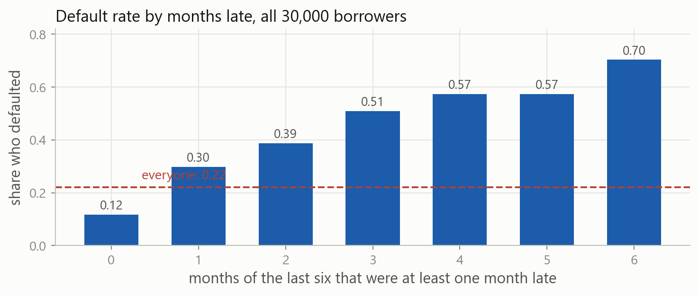
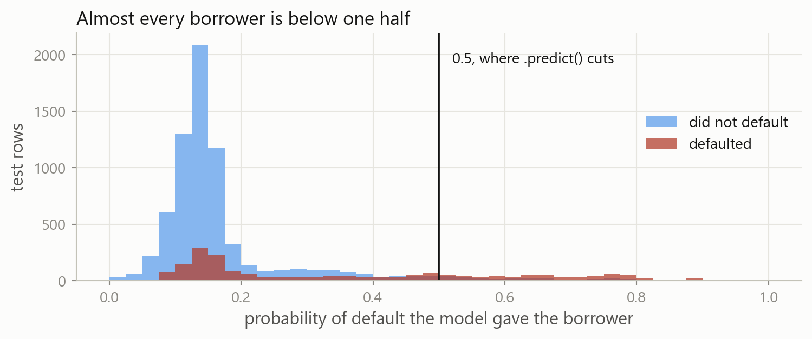
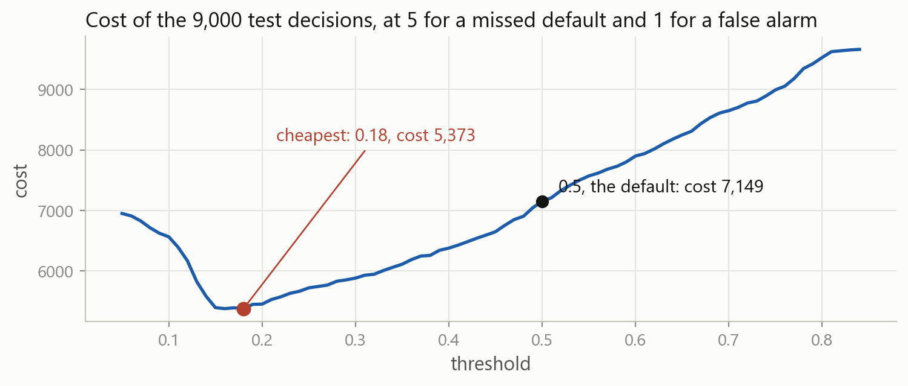
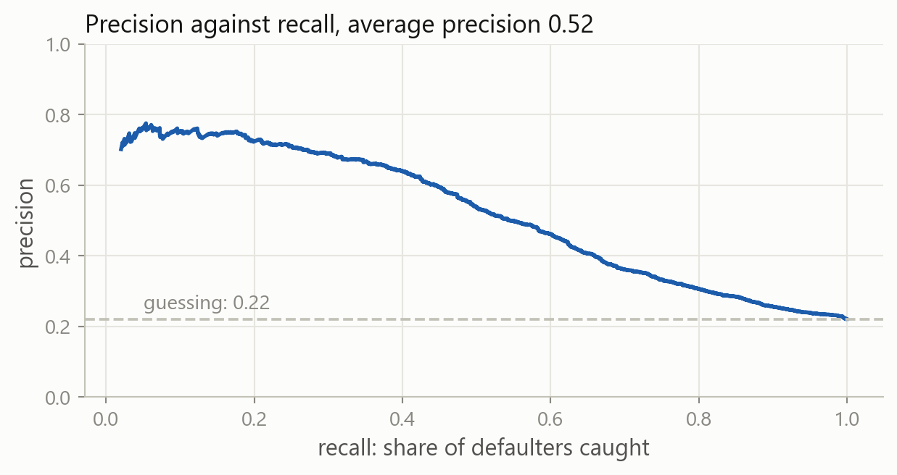
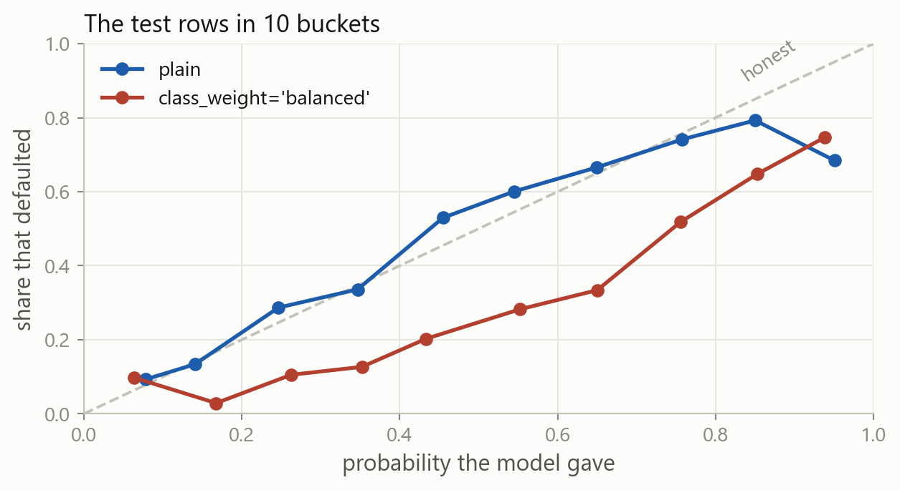
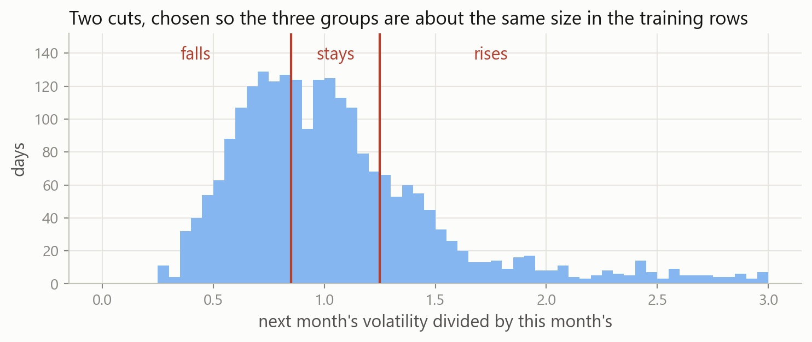
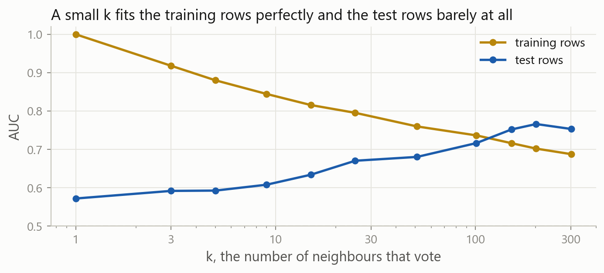
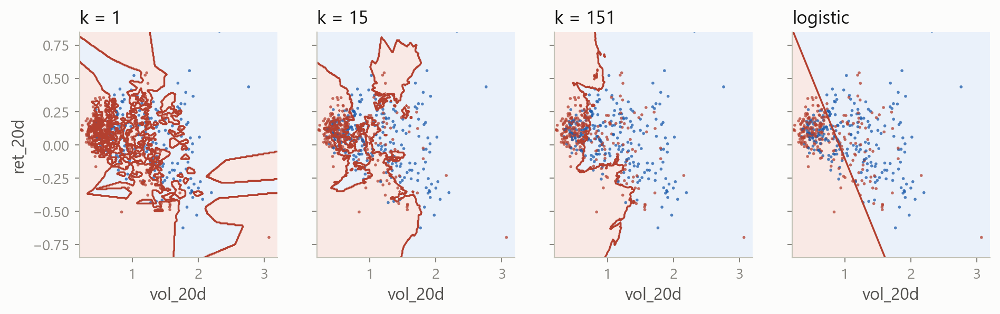

Machine Learning in Finance · Session 9
Last time a logistic regression predicted whether volatility would be higher next month. On the 482 test days it beat the majority class, 74 percent against 53.
Three things were left at their defaults: the threshold of one half, the meaning of the probabilities, and the fact that there were two classes.
The label is 1 on 48 percent of the days, so the two classes are almost the same size. Most decisions a bank or an insurer makes are not like that.
The lecture introduces each of these. The exercises and the case are where you practise them.
Part 1
A second table, in which one borrower in five defaults.
Payment records of 30,000 credit card holders at a Taiwanese bank in 2005, from the UCI Machine Learning Repository. One row per borrower, and amounts in New Taiwan dollars.
| column | what it is |
|---|---|
limit |
the credit limit on the account |
age |
the borrower’s age in years |
late_now |
months behind on the most recent bill, 0 if not behind |
months_late |
how many of the last six months were at least one month late |
bill |
the most recent bill |
paid |
the amount paid against that bill |
utilisation |
the most recent bill divided by the credit limit |
default |
1 if the borrower defaulted the following month |
6,636 of the 30,000 borrowers defaulted, which is 22 percent. The column already holds ones and zeros, so there is no label to build.

A borrower who was never late defaults 12 percent of the time. One who was late in all six months defaults 70 percent of the time.
Each row is a trading day, and the rows are in time order. A model fitted on 2023 and scored on 2020 would be using the future to predict the past, so the split is made by date and the folds move forward.
Each row is a different borrower, and the order they appear in carries no meaning. Any borrower may go in the training rows and any other in the test rows, so the split can be made at random.
train_test_split shuffles the rows and cuts them in two. It is the standard tool, and it is wrong for a time series.
random_state=0 fixes which borrowers go where, so the split is the same on every run. stratify keeps the share of defaults equal in both halves.
Nothing about the model changed. The columns are in different units, so the scaler goes in front of the classifier, as it did for ridge.
The model is right about 81.5 percent of the 9,000 test borrowers. Predicting that nobody defaults is right 77.9 percent of the time.
Rows are what happened, columns are the prediction. The model called 914 defaults and was right about 620; 1,991 borrowers defaulted, so it missed 1,371.
Of the borrowers the model called a default, 68 percent defaulted; of those who defaulted, it caught 31 percent.
When one class is rare, report recall beside accuracy. The accuracy of 0.815 is made of the borrowers the model correctly left alone.

Only 914 of the 9,000 borrowers reach 0.5, so .predict() calls almost everyone safe. The threshold produced the low recall, not the model.
Predict a default for every test borrower whose probability reaches 0.2, and report the recall and the precision. Decide first which way each will move.
p holds the probability of default for each test borrower, from predict_proba two slides ago. Compare it with 0.2 and turn the answer into ones and zeros, as the label itself was made.
Recall rises from 0.311 to 0.574 and precision falls from 0.678 to 0.486. The model called 2,353 defaults instead of 914, and caught 1,143 of the 1,991 instead of 620. The model itself never changed.
The bank lends, the borrower does not repay, and the balance is written off. The loss is the size of the credit extended.
The bank refuses or reduces a limit for a borrower who would have paid. The loss is the interest that borrower would have earned, and the customer.
The two mistakes are not worth the same, so the threshold with the fewest mistakes is not the cheapest one. Suppose a missed default costs 5 and a false alarm costs 1.
.ravel() flattens the 2 by 2 array into its four counts, in reading order. The last number is the cost of the 9,000 decisions: 7,149 at one half, 5,450 at 0.2.

Sweeping the threshold in steps of 0.01 puts the minimum at 0.18, where the 9,000 decisions cost 5,373 instead of 7,149. One number, a quarter of the cost.
\text{threshold} = \frac{\text{cost of a false alarm}}{\text{cost of a false alarm} + \text{cost of a miss}} = \frac{1}{1 + 5} = 0.167
Predicting a default pays when the probability times 5 is larger than 1, which is a probability above one sixth. The sweep found 0.18, and the two thresholds cost 5,373 and 5,386.
The same sweep on the 21,000 training rows picks 0.16, against the 0.18 the test rows would pick. The threshold is a setting like C, chosen on rows the model may see.
class_weight="balanced" counts each default 2.26 times during fitting and each repayment 0.64. Recall rises to 0.550 and accuracy falls to 0.778, below the 0.779 of predicting that nobody defaults.
The weights moved where the cut falls, not the ranking of the borrowers.
At a threshold of 0.2 the plain model reaches recall 0.574 at precision 0.486, and the weighted model reaches 0.550 at 0.498: the same place on the same curve. Only the threshold can be tuned to a cost.

Every threshold is one point on this curve, and average_precision_score summarises it: 0.52 against 0.22 for guessing. On a rare class it says more than the ROC curve, which is dominated by true negatives.
Part 2
Whether a model that says 0.30 is right about three borrowers in ten.
Take every borrower the model gave about 0.30, and count how many defaulted.
About 30 percent the number is a probability, and multiplying it by an amount of money gives an expected loss
12 percent the ranking may still be useful, but any decision that compares the number with a cost will be wrong
A model that passes this check is called calibrated.
pd.cut sorts every value into one of the ranges given. Grouping the label by it gives the share that defaulted in each bucket.
| the model said | borrowers | share that defaulted |
|---|---|---|
| 0.0 to 0.2 | 6,647 | 0.128 |
| 0.2 to 0.4 | 1,084 | 0.309 |
| 0.4 to 0.6 | 643 | 0.561 |
| 0.6 to 1.0 | 626 | 0.714 |
Every bucket’s share falls inside its own range, and the average probability is 0.2187 against the 0.2212 that defaulted.
| the model said | borrowers | share that defaulted |
|---|---|---|
| 0.0 to 0.2 | 214 | 0.042 |
| 0.2 to 0.4 | 5,518 | 0.121 |
| 0.4 to 0.6 | 1,502 | 0.226 |
| 0.6 to 1.0 | 1,766 | 0.551 |
Of the 5,518 borrowers it put between 0.2 and 0.4, 12 percent defaulted. The average probability is 0.439 against the same 0.2212, so every bucket says more than happens.

A calibrated model sits on the dashed diagonal. The plain model follows it closely; the weighted model sits below it everywhere.
The weights make the training rows behave as though 50 percent of borrowers default instead of 22 percent. The probabilities are then right for that invented population, not for the real one.
Anything that changes the mix of the training rows changes the level of the probabilities: class weights, dropping rows of the common class, or copying rows of the rare one.
The Brier score is the mean squared error of the probabilities, with what happened as 1 or 0. It is 0.1395 for the plain model and 0.1879 for the weighted one, and smaller is better.
Whether the borrowers who defaulted were given higher numbers than those who did not. Only the order matters, so 0.7476 and 0.7481 say the two models rank almost identically.
Whether the numbers are right in level. The Brier score separates the two models, 0.1395 against 0.1879, because one of them says 0.44 on average where 0.22 happens.
A model can rank perfectly and still be useless for a decision made by comparing a probability with a cost.
CalibratedClassifierCV learns a second, small model that maps the first model’s numbers onto probabilities, on folds. The average comes back to 0.2186 and the Brier score to 0.1395.
One sixth costs 5,386 on the plain model and 6,940 on the weighted one, where 0.167 does not mean the same thing. Calibrating brings it back to 5,385.
Part 3
A label with three values instead of two.
Whether next month is more volatile is a coarse question: a rise of one percent and a rise of 60 percent both count as a rise.
The ratio of next month’s volatility to this month’s is 0.978 in the middle and 6.07 at its largest. Its right tail is long, so the two cuts are not symmetric around one.

Below 0.85 next month is at least 15 percent calmer and above 1.25 at least 25 percent busier. The two cuts split the training days 38, 32 and 29 percent.
pd.cut is the function that bucketed the probabilities, with names given to the ranges. The label is text rather than a number, which scikit-learn accepts.
falls is the most common training label, so predicting it every day is the rule to beat. It is right on 35 percent of the test days.
Nothing in the call changed. LogisticRegression saw three values in the label and fitted three classes, right on 55 percent of the test days against 35 for the majority rule.
The labels come back sorted: falls, rises, stays, not the order the cuts were written in. Every array the model produces uses this order.
With two classes coef_ had one row. With three it has three, one per class, so the model turns a day’s two columns into three numbers instead of one.
The first test day scores 0.060 for falls, -0.324 for rises and 0.264 for stays. These are not probabilities: one is negative, and the three do not add up to anything in particular.
The exponential makes every score positive: 1.061, 0.724 and 1.302. Dividing each by their total of 3.087 makes them add to one, giving 0.344, 0.234 and 0.422.
P(\text{class } j) = \frac{e^{s_j}}{e^{s_1} + e^{s_2} + \cdots + e^{s_N}}
With N classes the model produces N scores and this returns N probabilities. It is called the softmax, and with two classes it is the sigmoid from last time.
One row per day, one column per class in the order of classes_, and every row adds to one. .predict() returns the largest of the three.
labels= puts the rows and columns in the order that reads naturally. Rows are what happened, columns the prediction, so the diagonal counts the days called correctly: 124, 65 and 78 of 482.
| said falls | said stays | said rises | |
|---|---|---|---|
| was falls | 124 | 30 | 15 |
| was stays | 77 | 65 | 80 |
| was rises | 2 | 11 | 78 |
A day that fell was called a rise 15 times, and a day that rose was called a fall twice. Only 17 of the 482 days are wrong by two steps.
Each class is scored in turn as the 1, with the other two as the 0. Recall is 0.734 for falls, 0.857 for rises and 0.293 for stays.
The report prints a macro average of 0.551. Build it yourself from the three per-class F1 scores, then say whether weighting by class size would give something larger or smaller.
average=None returns one F1 per class instead of a single number, in the order given by labels.
The three F1 scores are 0.667, 0.396 and 0.591, so the macro average is 0.551. Weighting is smaller at 0.528, because stays has 222 of the 482 test days and the worst F1 of the three.
Macro treats a rare class as seriously as a common one. Read it when the rare class is the one that matters.
coef_ is now 3 by 19, which is 57 numbers. The accuracy is 0.533 against 0.554 for two columns, so the extra 17 columns did not help here either.
Part 4
A classifier with no coefficients, put against logistic regression.
The four lines are the usual ones, with a different class on the first. Back on the two-class label, k of 15 scores 0.634 against 0.847 for logistic regression.
On the credit table the AUC is 0.627 without a scaler and 0.749 with one. limit varies by about 129,000 and late_now by 0.76, so distance means the difference in credit limits.

At k of 1 every training day is its own nearest neighbour, so the training AUC is 1 and the test AUC is 0.572. By k of 151 they are 0.716 and 0.752.
A large k is a simple model, in the same way that a small C was.

Each panel shades where the model gives a probability above one half. At k of 1 the regions are islands around individual days; as k grows they join up.
The search is the one used for alpha and for C, with a different setting named. It picks k of 301, with a mean AUC of 0.717 over the five folds.
The first fold fits on 319 days, so any k above 319 asks for more neighbours than there are rows. GridSearchCV returns nan and warns, which is why the grid stops at 301.
Logistic regression scores 0.745 against 0.717 for the best k, so the folds choose logistic regression. On the test days it is 0.847 against 0.753.
A vote works for any number of classes, so the same call takes the three-class label and returns three columns. It is right on 49 percent of the test days against 55 for logistic regression.
Fitting searches for the coefficients and takes the time. Predicting is one multiplication per column, so it is immediate, and the fitted model is a handful of numbers you can read.
Fitting only stores the training rows. Predicting measures the distance from each new row to all of them, so the cost falls at prediction time and the whole training table has to be kept.
On the 19-column table here: logistic regression fits in 9 milliseconds and predicts in 1, k-NN fits in 2 and predicts in 21.
Trees and ensembles split the table one column at a time. They come next, and they need no scaler.
Discriminant analysis models each class as a bell shape. Close to logistic regression, with more assumptions about the columns.
Naive Bayes treats every column as independent given the class. Fast on wide tables, and false on market columns.
Support vector machines choose the boundary with the widest margin. Strong on small tables, and no probability without extra work.
Each gives a probability, and each is scored the same way.
Accuracy hides a rare class 77.9 percent of borrowers did not default, so predicting that nobody defaults scores 0.779. Report recall beside accuracy, and read the confusion matrix.
The threshold is a decision .predict() uses one half. At a cost of 5 for a miss and 1 for a false alarm, one sixth is cheapest, and saved a quarter of the cost.
Rows that are not a time series train_test_split(..., stratify=y, random_state=0) for a cross-section, TimeSeriesSplit for days. stratify keeps the rare class in both halves.
class_weight moves the cut, not the ranking class_weight="balanced" raised recall from 0.311 to 0.550 and left AUC at 0.748. It also broke the probabilities.
Calibration: said against happened Bucket with pd.cut and compare each bucket with what happened. brier_score_loss is the one number, CalibratedClassifierCV the repair.
More than two classes classes_ is alphabetical, coef_ gets a row per class and predict_proba a column. The softmax turns the scores into probabilities.
Macro or weighted Macro treats the classes equally, weighted by their size. When the class you care about is the small one, read macro.
k-nearest neighbours KNeighborsClassifier(n_neighbors=k), scaled, with k on the folds. A large k is a simple model. Logistic regression won here.
Every model from here on gives a probability. What changes is how the probability is produced; the threshold, the costs and the scores stay the same.
class_weight, calibration buckets, three-class labels and their scores, and k-NN against logistic regression.Stuck? Ask a friend, ask an AI for a hint rather than an answer, or email jobo@econ.au.dk.